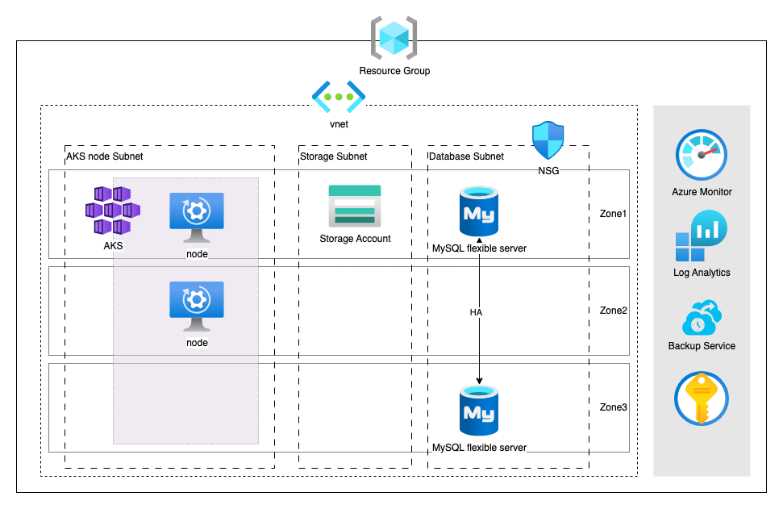

Introduction #
Hello everyone! In this article, I will show you how to provision cloud resources for a 3-Tier architecture through IaC by Terraform and deploy the application in Kubernetes(AKS).
Terraform as a cornerstone in IaC, revolutionizes modern IT practices, offering unparalleled benefits for reliability and agility. Notably, Terraform sets itself apart by being cloud-agnostic, allowing for the seamless integration of multiple providers and services, and creating a comprehensive representation and management of the entire infrastructure ecosystem and its associated services.
With my experience on cloud architecture, I will demonstrate all processes from provisioning cloud infrastructure to application deployment. In this case, assuming our customer have DevOps Team to handle operational workloads and will deploy monitoring tools to observe performance of their applications, we deploy Kubernetes service instead of container service, in order to provide more control and flexibility.
And in this blog, we will first go through all steps on how we provision cloud infrastructure in Azure by Terraform with well-designed cloud strategy, from considering aspect of security, data protection, monitoring, etc. So, let’s get started!
For more information on Terraform, please refer to Terraform and Azure Provider for information and documents.
Architecture #

Before you begin #
To complete this document you need the following resources:
- Azure Account
- Azure Service Principal
To create Azure Account and Service Principal, please refer to Azure Account and Azure Service Principal.
Note: The whole demonstration will run in bash, Azzure CLI, and TF code for further CICD.
Step 1: Set up TF project #
The first thing for Terraform is to set up the location of the tf state. TF state tracks the current state of your infrastructure and resources and allows Terraform to manage and update them as needed. We choose Azure Blob Storage as backend for Terraform in our demonstration.
Note: Azure Blob Storage provides server-side encryption to protect your data, by preventing unauthorized access and safeguarding sensitive data.
Create Azure Blob Storage #
Before you create blob storage, sign in with Azure CLI.
APPID="<app-id>"
SPPASSWORD="<password-or-cert>"
SPTENANT="<tenant>"
# Login with service-principal
az login --service-principal -u $APPID -p $SPPASSWORD --tenant $SPTENANT
Then, run Azure CLI to create resource group, storage account and blob container for storing tf state.
#!/bin/bash
RESOURCE_GROUP_NAME="project-tfstate"
STORAGE_ACCOUNT_NAME="project-tfstate-sa"
CONTAINER_NAME="project-tfstate-sa-blob"
# Create resource group
az group create --name $RESOURCE_GROUP_NAME --location eastus
# Create storage account
az storage account create --resource-group $RESOURCE_GROUP_NAME --name $STORAGE_ACCOUNT_NAME --sku Standard_LRS --encryption-services blob
# Create blob container
az storage container create --name $CONTAINER_NAME --account-name $STORAGE_ACCOUNT_NAME
Create Terraform State #
Terraform’s backend defines where Terraform stores its state data files. Thus, we define backend in your Terraform configuration to create Azure Blob Storage backend.
Note: We use the name of Storage Account, resource group, and blob storage created in the pervious step as variables in those configurations.
# provider.tf
terraform {
backend "azurerm" {
resource_group_name = "project-tfstate"
storage_account_name = "project-tfstate-sa"
container_name = "project-tfstate-sa-blob"
key = "demo.terraform.tfstate"
}
}
Provider Configuration #
Terraform relies on plugins called providers to interact with cloud providers, SaaS providers, and other APIs. Thus, we add provider “azurerm” for Terraform to interact with Azure.
Note: Specify the version on provider as for provider versioning, and avoid accidental upgrades to incompatible new versions.
# provider.tf
terraform {
required_providers {
azurerm = {
source = "hashicorp/azurerm"
version = "=3.79.0"
}
}
backend "azurerm" {
....
}
}
# Configure the Azure provider
provider "azurerm" {
features {
key_vault {
purge_soft_delete_on_destroy = true
recover_soft_deleted_key_vaults = true
}
}
storage_use_azuread = true
skip_provider_registration = true
}
Step 2: Creating Cloud Resource with Terraform #
As for 3-Tier architecture, we will create VMs, Kubernetes cluster, Database, Storage, VNet, etc step by step. Before we start coding on resources, we define some variables first.
Variables and Data #
Specifying their values in variable definitions files(with a filename ending in either .tfvars or .tfvars.json) helps to set lots of variables in different environments. So we divide 1 .tfvar file to set the value of variable per environment and 1 .tf file to declare input variables.
Note: We can specify file by environment on the terraform command line with flag "-var-file". The command will be shown later.
# test.tfvars
environment = "test"
location = "East Asia"
# variable.tf
variable "environment" {
type = string
}
variable "location" {
type = string
}
More, we use terraform data to get current Azure subscription and current configuration of AzureRM provider.
# data.tf
data "azurerm_subscription" "current" {}
data "azurerm_client_config" "current" {}
Note: Data sources serve as a bridge between the current infrastructure and the desired configuration, allowing for more dynamic and context-aware provisioning.
Resource Group #
Providing a management layer that enables you to manage resources in Azure account, we create a resource group first and organize our infrastructure within the resource group.
# Resource Group
resource "azurerm_resource_group" "project" {
name = "project-rg-${var.environment}"
location = var.location
tags = {
Environment = "${var.environment}"
}
}
Virtual Network #
Let’s create an Azure Virtual Network and subnets.
VNet #
This deploys a virtual network called “project-vnet-test” inside resource group “project-rg-test” with an address space of “10.0.0.0/16”, which will allow you to deploy multiple subnets in that range.
# vnet.tf
# Create a virtual network
resource "azurerm_virtual_network" "project" {
name = "project-vnet-${var.environment}"
address_space = ["10.0.0.0/16"]
location = azurerm_resource_group.project.location
resource_group_name = azurerm_resource_group.project.name
tags = {
Environment = "${var.environment}"
}
}
Subnet #
Building 3 subnets for AKS Node pool, Storage Account, and MySQL, we hold CIDR “10.0.2.0/24” for later defining AKS’s network profile. Subnet are then defined with address prefixes:
- “10.0.1.0/24” for AKS node pool subnet
- “10.0.3.0/24” for Storage subnet
- “10.0.4.0/24” for MySQL subnet
For subnet “project-db-subnet-test”, we delegated the subnet to “Microsoft.DBforMySQL/flexibleServers” means that only Azure Database for MySQL flexible server instances can use that subnet.
Last but not least, all subnets were added “Microsoft.Storage” for service endpoint for secure and direct connectivity to Azure Storage service.
Note: Virtual Network (VNet) service endpoint provides secure and direct connectivity to Azure services over an optimized route over the Azure backbone network.
Note: Subnet delegation provides full control to the customer on managing the integration of Azure services into their virtual networks.
# vnet.tf
### CIDR "10.0.2.0/24" is delegated for AKS services
# Subnet for AKS node pool
resource "azurerm_subnet" "node_subnet" {
name = "project-node-subnet-${var.environment}"
resource_group_name = azurerm_resource_group.project.name
virtual_network_name = azurerm_virtual_network.project.name
address_prefixes = ["10.0.1.0/24"]
service_endpoints = ["Microsoft.Storage"]
}
# Subnet for Storage
resource "azurerm_subnet" "storage_subnet" {
name = "project-storage-${var.environment}"
resource_group_name = azurerm_resource_group.project.name
virtual_network_name = azurerm_virtual_network.project.name
address_prefixes = ["10.0.3.0/24"]
service_endpoints = ["Microsoft.Storage"]
}
# Subnet for MySQL
resource "azurerm_subnet" "db_subnet" {
name = "project-db-subnet-${var.environment}"
resource_group_name = azurerm_resource_group.project.name
virtual_network_name = azurerm_virtual_network.project.name
address_prefixes = ["10.0.4.0/24"]
service_endpoints = ["Microsoft.Storage"]
delegation {
name = "fs"
service_delegation {
name = "Microsoft.DBforMySQL/flexibleServers"
actions = [
"Microsoft.Network/virtualNetworks/subnets/join/action",
]
}
}
}
Network Security Group #
Security rules in network security groups enable us to filter the type of network traffic that can flow in and out of virtual network subnets and network interfaces. We create 1 NSG to filter traffic that flow in and out MySQL subnet.
# nsg.tf
# Security Group
resource "azurerm_network_security_group" "nsg" {
name = "project-sg-${var.environment}"
location = azurerm_resource_group.project.location
resource_group_name = azurerm_resource_group.project.name
security_rule {
name = "AllowMySQL"
priority = 100
direction = "Inbound"
access = "Allow"
protocol = "Tcp"
source_port_range = "*"
destination_port_range = "3306"
source_address_prefix = "10.0.2.0/24"
destination_address_prefix = "10.0.4.0/24"
}
tags {
environment = "${var.environment}"
}
}
resource "azurerm_subnet_network_security_group_association" "data" {
subnet_id = azurerm_subnet.example.id
network_security_group_id = azurerm_network_security_group.nsg.id
}
User Assigned Identity #
We then create 1 UAI as prerequisites for MySQL server. The managed identity will be configured to MySQL server, and so we can authorize with UAI to MySQL database securly.
Note: You may also create a managed identity as a standalone Azure resource. You can create a user-assigned managed identity and assign it to one or more Azure Resources.
# uai.tf
# User Assigned Identity
resource "azurerm_user_assigned_identity" "uai" {
name = "project-uai-${var.environment}"
resource_group_name = azurerm_resource_group.project.name
location = azurerm_resource_group.project.location
}
Key Vault #
More, we create Key Vault as secure store for secrets. And 2 2048 bit RSA keys will be created, separately for MySQL and Storage Account.
Note: Premium level pricing tier adds Thales HSM (Hardware Security Modules) to Key Vault comparing to standard level pricing tier. please refer to Azure Key Vault pricing.
Note: Access policys of key vault is nearly providing full access to UAI and user as for demo. Please adjust according to your need. Here is one example on requirement of access policy for Data encryption for Azure Database for MySQLMySQL fexible server.
# key_vault.tf
# Key Vault
resource "azurerm_key_vault" "key" {
name = "project-dbkey-${var.environment}"
location = azurerm_resource_group.project.location
resource_group_name = azurerm_resource_group.project.name
enabled_for_disk_encryption = true
tenant_id = data.azurerm_client_config.current.tenant_id
soft_delete_retention_days = 90 # value can be between 7 and 90 (the default) days
purge_protection_enabled = true # Once Purge Protection has been enabled it's not possible to disable it
sku_name = "standard" # refer to pricing tier, possible values are standard and premium
}
# Access Policy for yourself
resource "azurerm_key_vault_access_policy" "yourself" {
key_vault_id = azurerm_key_vault.key.id
tenant_id = data.azurerm_client_config.current.tenant_id
object_id = data.azurerm_client_config.current.object_id
key_permissions = [
"Get", "List", "Update", "Create", "Import", "Delete", "Recover", "Backup", "Restore",
"Decrypt", "Encrypt", "UnwrapKey", "WrapKey", "Verify", "Sign", "Purge",
"Release", "Rotate", "GetRotationPolicy", "SetRotationPolicy"
]
secret_permissions = [
"Backup", "Delete", "Get", "List", "Purge", "Recover", "Restore", "Set"
]
storage_permissions = [
"Backup", "Delete", "DeleteSAS", "Get", "GetSAS", "List", "ListSAS", "Purge",
"Recover", "RegenerateKey", "Restore", "Set", "SetSAS", "Update"
]
}
# Access Policy for UAI
resource "azurerm_key_vault_access_policy" "uai" {
key_vault_id = azurerm_key_vault.key.id
tenant_id = azurerm_user_assigned_identity.uai.tenant_id
object_id = azurerm_user_assigned_identity.uai.principal_id
key_permissions = [
"Get", "List", "Update", "Create", "Import", "Delete", "Recover", "Backup", "Restore",
"Decrypt", "Encrypt", "UnwrapKey", "WrapKey", "Verify", "Sign", "Purge",
"Release", "Rotate", "GetRotationPolicy", "SetRotationPolicy"
]
secret_permissions = [
"Backup", "Delete", "Get", "List", "Purge", "Recover", "Restore", "Set"
]
storage_permissions = [
"Backup", "Delete", "DeleteSAS", "Get", "GetSAS", "List", "ListSAS", "Purge",
"Recover", "RegenerateKey", "Restore", "Set", "SetSAS", "Update"
]
}
# We will add Access Policy for Storage Account later
# Key
resource "azurerm_key_vault_key" "db" {
name = "project-dbkey-${var.environment}"
key_vault_id = azurerm_key_vault.key.id
key_type = "RSA"
key_size = 2048
key_opts = [
"decrypt",
"encrypt",
"sign",
"unwrapKey",
"verify",
"wrapKey",
]
rotation_policy {
automatic {
time_before_expiry = "P30D" #ISO 8601 duration
}
expire_after = "P3Y" #ISO 8601 duration
notify_before_expiry = "P29D" #ISO 8601 duration
}
}
resource "azurerm_key_vault_key" "storage" {
name = "project-storagekey-${var.environment}"
key_vault_id = azurerm_key_vault.key.id
key_type = "RSA"
key_size = 2048
key_opts = [
"decrypt",
"encrypt",
"sign",
"unwrapKey",
"verify",
"wrapKey",
]
rotation_policy {
automatic {
time_before_expiry = "P30D" #ISO 8601 duration
}
expire_after = "P3Y" #ISO 8601 duration
notify_before_expiry = "P29D" #ISO 8601 duration
}
}
Storage #
As mentioned before, storage will be created, to store content (eg. image, video) and log from MySQL server.
Storage Account #
Storage Account is created as Geo-redundant storage for this demo. It takes advantage as Azure will replicates your storage account synchronously across Azure availability zones in the same region.
Note: Flag “account_replication_type” refers to Azure Storage redundancy. Valid options are LRS, GRS, RAGRS, ZRS, GZRS and RAGZRS. Please adjust the value according to your needs. For example, vaule “GRS” may be needed for production environment.
# storage.tf
# Storage Account
resource "azurerm_storage_account" "project" {
name = "project${var.environment}storage"
resource_group_name = azurerm_resource_group.project.name
location = azurerm_resource_group.project.location
account_tier = "Standard" # refer to pricing tier, possible values are standard and premium
account_replication_type = "ZRS" # Value changing may forces a new resource to be created
large_file_share_enabled = "false"
public_network_access_enabled = "true" # public network access is enabled as for testing environment
# Example to setup blob properties
# blob_properties {
# change_feed_enabled = "true"
# last_access_time_enabled = "true"
# versioning_enabled = "true"
# delete_retention_policy {
# days = 35
# }
# restore_policy {
# days = 30
# }
# }
identity {
type = "SystemAssigned" # type of Managed Service Identity configured on Storage Account
}
lifecycle {
ignore_changes = [
customer_managed_key # customer managed key will be manage in other teeraform resource
]
}
}
Network Rules for Storage Account #
Note: Only one azurerm_storage_account_network_rules can be tied to an azurerm_storage_account.
# storage.tf
# Network Rules for Storage Account
resource "azurerm_storage_account_network_rules" "myipandsubnet" {
storage_account_id = azurerm_storage_account.project.id
default_action = "Deny"
ip_rules = ["xxx.x.xxx.xxx"] # edit value to your home IP or whitelisted ip
virtual_network_subnet_ids = [azurerm_subnet.storage_subnet.id, azurerm_subnet.db_subnet.id, azurerm_subnet.node_subnet.id] # subnet ids to secure the storage account
bypass = ["Metrics"]
}
Data Encrytion for Storage Account #
Notes that resource “azurerm_storage_account” are ignoring changes in block “customer_managed_key” as we manage Customer Managed Key by resource “azurerm_storage_account_customer_managed_key”.
Note: It’s possible to define a Customer Managed Key both within resource “azurerm_storage_account” via block “customer_managed_key” and by using the resource “azurerm_storage_account_customer_managed_key”. However it’s not possible to use both methods to manage a Customer Managed Key for a Storage Account, since there’ll be conflicts.
# key.tf
resource "azurerm_key_vault_access_policy" "storage" {
key_vault_id = azurerm_key_vault.key.id
tenant_id = data.azurerm_client_config.current.tenant_id
object_id = azurerm_storage_account.project.identity.0.principal_id # Principal ID for the Service Principal associated with Identity of Storage Account
secret_permissions = ["Get"]
key_permissions = ["Get", "Create", "List", "Restore", "Recover", "UnwrapKey", "WrapKey", "Purge", "Encrypt", "Decrypt", "Sign", "Verify"]
}
# storage.tf
# Data Encrytion for Storage Account
resource "azurerm_storage_account_customer_managed_key" "storage_key" {
storage_account_id = azurerm_storage_account.project.id
key_vault_id = azurerm_key_vault.key.id
key_name = azurerm_key_vault_key.storage.name
}
Storage Blob Container #
After all setting created, we create Blob Container to storage files.
# Storage Blob Container
resource "azurerm_storage_container" "project" {
name = "project-blob"
storage_account_name = azurerm_storage_account.project.name
container_access_type = "blob"
}
MySQL #
For MySQL, we choose to provision MySQL Flexible Server (Azure Database for MySQL - Single Server is scheduled for retirement by September 16, 2024).
Note: To learn difference between MySQL Single Server and MySQL Flexible Server, please refer to here.
Private DNS Zone #
We create Private DNS Zone for MySQL server to make sure database connect in a secure way within our VNet.
# private_dns.tf
resource "azurerm_private_dns_zone" "database" {
name = "project.${var.environment}.mysql.database.azure.com"
resource_group_name = azurerm_resource_group.project.name
}
resource "azurerm_private_dns_zone_virtual_network_link" "db_links" {
name = "${azurerm_virtual_network.project.name}-${var.environment}.com"
private_dns_zone_name = azurerm_private_dns_zone.database.name
resource_group_name = azurerm_resource_group.project.name
virtual_network_id = azurerm_virtual_network.project.id
}
MySQL Database Server #
Note that compute size “D2ads v5” is newly added in Region East Asia, pricing calculator isn’t updated on the choice of MySQL compute size when I used this size. Cost is $0.1420 USD on 6 Feb 2024. For more information, please refer to compute size and cost.
By experience, I advise to set mode of block “high_availability” to “ZoneRedundant”. It can only be set before we create it. You CANNOT change HA mode to Zone-redundant if you created server with same-zone mode once.
Note: Flag “private_dns_zone_id” is required when setting flag “delegated_subnet_id”. Private DNS zone should end with suffix ‘.mysql.database.azure’.com.
# mysql.tf
# MySQL Database Server
resource "azurerm_mysql_flexible_server" "main" {
name = "project-mysqlserver-${var.environment}"
location = azurerm_resource_group.project.location
resource_group_name = azurerm_resource_group.project.name
delegated_subnet_id = azurerm_subnet.db_subnet.id # Changing value forces a new MySQL Flexible Server to be created
private_dns_zone_id = azurerm_private_dns_zone.database.id
zone = "1"
administrator_login = "projectadmin"
administrator_password = "xxxxxx" # change to your own password
sku_name = "GP_Standard_D2ads_v5" # refer to SKU tier and compute size
storage {
size_gb = 20
auto_grow_enabled = true # must be "true" to enable `high_availability`
}
identity {
type = "UserAssigned"
identity_ids = [azurerm_user_assigned_identity.uai.id] # use created UAI as Service Identity
}
# Data Encrytion
customer_managed_key {
key_vault_key_id = azurerm_key_vault_key.db.id # set Encrytion key with created key
primary_user_assigned_identity_id = azurerm_user_assigned_identity.uai.id
}
version = "5.7" # MySQL version, change to your own required version
backup_retention_days = 30 # default 7 days
high_availability {
mode = "ZoneRedundant" # prefer set it to ZoneRedundant, mode can be change when you created server
standby_availability_zone = 2
}
tags = {
Environment = "${var.environment}"
}
depends_on = [azurerm_private_dns_zone_virtual_network_link.db_links]
lifecycle {
ignore_changes = [
zone, high_availability.0.standby_availability_zone # avoid to migrate MySQL Flexible Server back to primary Availability Zone if a fail-over occured
]
# prevent_destroy = true # prevent destroy for production environment
}
}
Active Directory administrator #
Here is example to provide admin access to myself. The solution can be used to provide server admin access to corresponding team with UAI.
resource "azurerm_mysql_flexible_server_active_directory_administrator" "me" {
server_id = azurerm_mysql_flexible_server.main.id
identity_id = azurerm_user_assigned_identity.prod.id
login = "sqladmin"
object_id = data.azurerm_client_config.current.client_id # myself
tenant_id = data.azurerm_client_config.current.tenant_id # myself
}
Server Audit Log #
We enable audit log by updating server configurations. Audit log will be exported to Storage by updating Diagnostic Setting. Retention policy of audit log will be handled later.
Note: Please refer to audit-logs and tutorial to learn more on audit log setting, including audit log events.
Note: Feature “retention_policy” has been deprecated in favor of resource “azurerm_storage_management_policy”.
# MySQL Database Server Parameters
resource "azurerm_mysql_flexible_server_configuration" "audit_log_enabled" {
name = "audit_log_enabled"
resource_group_name = azurerm_resource_group.project.name
server_name = azurerm_mysql_flexible_server.main.name
value = "ON" # enable audit log
}
resource "azurerm_mysql_flexible_server_configuration" "audit_log_events" {
name = "audit_log_events"
resource_group_name = azurerm_resource_group.project.name
server_name = azurerm_mysql_flexible_server.main.name
value = "CONNECTION,GENERAL" # controls the events to be logged
}
# Example on setting MySQL users to be included for logging.
# resource "azurerm_mysql_flexible_server_configuration" "audit_log_include_users" {
# name = "audit_log_include_users"
# resource_group_name = azurerm_resource_group.project.name
# server_name = azurerm_mysql_flexible_server.main.name
# value = "projectadmin"
# }
# MySQL Database Diagnostic Setting
resource "azurerm_monitor_diagnostic_setting" "mysqlauditlog" {
name = "mysqlauditlog"
target_resource_id = azurerm_mysql_flexible_server.main.id
storage_account_id = azurerm_storage_account.project.id # storage account that logs will be sent
enabled_log {
category = "MySqlAuditLogs" # possible values are "MySqlSlowLogs" and "MySqlAuditLogs" for MySQL flexible server
retention_policy {
enabled = false
}
}
metric {
category = "AllMetrics"
enabled = false
retention_policy {
enabled = false
}
}
depends_on = [
azurerm_mysql_flexible_server_configuration.audit_log_enabled, azurerm_mysql_flexible_server_configuration.audit_log_events
]
}
# Storage Lifecycle for MySQL Audit Log
resource "azurerm_storage_management_policy" "project_mysql" {
storage_account_id = azurerm_storage_account.project.id
rule {
name = "mysql-auditlog-lifecycle"
enabled = true
filters {
prefix_match = ["am-containerlog/WorkspaceResourceId=/subscriptions"]
blob_types = ["blockBlob"]
}
actions {
base_blob {
tier_to_cool_after_days_since_modification_greater_than = 30
tier_to_archive_after_days_since_modification_greater_than = 90
delete_after_days_since_modification_greater_than = 2555
}
version {
change_tier_to_archive_after_days_since_creation = 15
change_tier_to_cool_after_days_since_creation = 7
delete_after_days_since_creation = 30
}
}
}
}
MySQL Database #
After all audit log settings created, we create MySQL Database.
# MySQL Database
resource "azurerm_mysql_flexible_database" "project" {
name = "project-mysqldb-${var.environment}"
resource_group_name = azurerm_resource_group.project.name
server_name = azurerm_mysql_flexible_server.main.name
charset = "utf8mb4"
collation = "utf8mb4_unicode_ci"
}
Azure Kubernetes Cluster (AKS) #
Log Analytics Workspace #
In order to store and read cluster log, we create Log Analytics Workspace to query log.
log.tf
# Log Analytics for AKS
resource "azurerm_log_analytics_workspace" "aks_insights" {
name = "project-aks-${var.environment}-log"
location = azurerm_resource_group.project.location
resource_group_name = azurerm_resource_group.project.name
sku = "Free" # use tier "Free" as for test environment, defaults to "PerGB2018"
retention_in_days = 7 # workspace's default retention, 7 days (Free Tier only), range between 30 and 730 days for other tier
# daily_quota_gb = 0.5 # default value of 0.5 for free tier
}
Kubernetes Cluster #
As a hosted Kubernetes service, Azure handles critical tasks, like health monitoring and maintenance. AKS will automatically create a node resource group, contains all of the infrastructure resources associated with the cluster, name as "MC_${resource_group}_${AKS_name}_${region}".
Kubenet was chosen as networking option(CNI) in my experience, as we didn’t have enough information to design networking at the initial stage when we were working for project. I advise to choose Azure CNI for better solution, also better performance and adding transparency to network.
Note: Please refer to AKS: Kubenet vs Azure CNI to learn more on difference between Kubenet and Azure CNI.
Note: AKS has a high Log Analytics cost, including Container Insights, Prometheus and Grafana. Determine if feature should be enable or not by consdering project budget. Learn more to enable these monitoring features.
# aks.tf
# AKS
resource "azurerm_kubernetes_cluster" "main" {
name = "project-aks-${var.environment}"
location = azurerm_resource_group.project.location
resource_group_name = azurerm_resource_group.project.name
dns_prefix = "project-k8s-${var.environment}"
# For production change to "Standard"
sku_tier = "Free" # Can also be set to Standard
# latest recommended version will be used if kubernetes_version isn't specified
# kubernetes_version = 1.29
network_profile {
network_plugin = "azure" # choosing Azure CNI as networking option(CNI)
network_policy = "azure" # currently use Azure Network Policy Manager, possible values are calico, azure and cilium
dns_service_ip = "10.0.2.10"
service_cidr = "10.0.2.0/24"
}
default_node_pool {
name = "default"
vm_size = "Standard_D2_v5" # 2 CPU, 8 GiB, On Demand $0.1320USD for Region East Asia
vnet_subnet_id = azurerm_subnet.node_subnet.id # use created node subnet
type = "VirtualMachineScaleSets" # use "VirtualMachineScaleSets" in order to enable auto-scaling
enable_auto_scaling = true
node_count = 1
min_count = 1
max_count = 2
# Kubernetes labels for nodes
node_labels = {
env = "test"
}
}
identity {
type = "UserAssigned"
identity_ids = [azurerm_user_assigned_identity.uai.id] # use created UAI as Service Identity
}
# Enable Container insights for real time pod logging
oms_agent {
log_analytics_workspace_id = azurerm_log_analytics_workspace.aks_insights.id
}
tags = {
Environment = "${var.environment}"
}
}
＃ create output to config AKS in Terraform's provider if needed
# output "client_certificate" {
# value = azurerm_kubernetes_cluster.main.kube_config.0.client_certificate
#
# sensitive = true
# }
#
# output "kube_config" {
# value = azurerm_kubernetes_cluster.main.kube_config_raw
#
# sensitive = true
# }
Azure Container Registry #
We then create Azure Container Registry in order to build, store, and manage container images.
# Container Registry
resource "azurerm_container_registry" "project" {
name = "projectRegistry${var.environment}"
resource_group_name = azurerm_resource_group.project.name
location = azurerm_resource_group.project.location
sku = "Basic" # use basic tier as we dont need large storage to store image
}
# Attaching ACR to AKS
# Role Assignment for AKS
resource "azurerm_role_assignment" "project_role" {
principal_id = azurerm_kubernetes_cluster.main.kubelet_identity[0].object_id
role_definition_name = "AcrPull"
scope = azurerm_container_registry.project.id
skip_service_principal_aad_check = true
}
Budget #
Creating budget to monitor all of Azure service charges and track your actual Azure service costs.
Action Group #
Action group can perform various actions when your budget threshold is met. We can also enable mobile push notifications by enabling Azure app push notifications while configuring the action group. But here we use email as demo.
# budget.tf
# Action Group for Contact
resource "azurerm_monitor_action_group" "project_subscription" {
name = "project_subscription_monitoring_${var.environment}"
resource_group_name = azurerm_resource_group.project.name
short_name = "project"
email_receiver {
name = "sendtoadmin"
email_address = "marcotam.work@gmail.com"
use_common_alert_schema = true
}
email_receiver {
name = "sendtodevops"
email_address = "mymanager@gmail.com"
use_common_alert_schema = true
}
}
Budget #
For budget, we use 2 resource groups as budget scope, with budget amount $1000 USD. And different contact option were shown in code below.
# budget.tf
# Budget
resource "azurerm_consumption_budget_subscription" "project_subscription" {
name = "project_subscription_budget-${var.environment}"
subscription_id = data.azurerm_subscription.current.id
amount = 1000 # setting USD$1000 for total
time_grain = "Monthly"
time_period {
start_date = formatdate("YYYY-MM-01'T'00:00:00Z", timestamp()) # take current date as start date
}
filter {
dimension {
name = "ResourceGroupName"
values = [
azurerm_resource_group.project.name, "MC_project-${var.environment}_project-aks-${var.environment}_eastasia" # initial resource group and AKS resource group
]
}
}
notification {
enabled = true
threshold = 70.0
operator = "EqualTo"
# contact option on action groups
contact_groups = [
azurerm_monitor_action_group.project_subscription.id,
]
}
notification {
enabled = true
threshold = 100.0
operator = "EqualTo"
# contact option on roles
contact_roles = [
"Owner",
]
}
notification {
enabled = true
threshold = 100.0
operator = "GreaterThan"
threshold_type = "Forecasted"
# contact option on email
contact_emails = [
"mymanager@gmail.com",
"marcotam.work@gmail.com"
]
}
depends_on = [
azurerm_kubernetes_cluster.main
]
lifecycle {
ignore_changes = [
time_period
]
}
}
Backup #
The main targets on backup is all the data stored in project. Azure Database for MySQL flexible server automatically creates server backups. Thus, we need to create backup for storage. We will use Azure Backup to back up our blob storage.
Backup Vault #
We create Backup vault to houses backup data for certain newer Backup workloads.
Note: We choose Vaulted backup as it retain data for a maximum of 10 years. Please refer to backup for Azure Blobs using Azure Backup to learn more on difference between operational and vaulted backups.
# backup.tf
# Backup Vault
resource "azurerm_data_protection_backup_vault" "project" {
name = "project-backup-${var.environment}"
resource_group_name = azurerm_resource_group.project.name
location = azurerm_resource_group.project.location
datastore_type = "VaultStore" # possible values are ArchiveStore, OperationalStore, SnapshotStore and v. choose OperationalStore or VaultStore for Storage Backup
redundancy = "LocallyRedundant" # possible values are GeoRedundant, LocallyRedundant and ZoneRedundant. Cost will change according to value. Changing this forces a new Backup Vault to be created.
identity {
type = "SystemAssigned"
}
}
Role Assignment for Storage BackUp #
Assign required access for backup vault inorder to protect storage account from any accidental deletions by applying Backup-owned Delete Lock.
# backup.tf
# Role Assignment for Storage BackUp
resource "azurerm_role_assignment" "storage_backup" {
scope = azurerm_storage_account.project.id
role_definition_name = "Storage Account Backup Contributor"
principal_id = azurerm_data_protection_backup_vault.project.identity[0].principal_id
}
Backup Policy and Backup Instance #
Backup policy defines the schedule and frequency of the recovery points creation, and its retention duration in the Backup vault. Thus, we create backup for Storage Account.
# backup.tf
# Backup policy for Storage Account
resource "azurerm_data_protection_backup_policy_blob_storage" "storage_policy" {
name = "project-backup-${var.environment}"
vault_id = azurerm_data_protection_backup_vault.project.id
retention_duration = "P30D" # #ISO 8601 duration
}
# Backup for Storage Account
resource "azurerm_data_protection_backup_instance_blob_storage" "example" {
name = "project-backup-storage-${var.environment}"
vault_id = azurerm_data_protection_backup_vault.project.id
location = azurerm_resource_group.project.location
storage_account_id = azurerm_storage_account.project.id
backup_policy_id = azurerm_data_protection_backup_policy_blob_storage.storage_policy.id
depends_on = [azurerm_role_assignment.storage_backup] # required role Assignment for Storage BackUp
}
Conclusion #
The whole architecture was assumed as test environment and self-owned, so most of the tier was chosen as Free tier or the cheapest one. Beside database, monitoring and backup service are also expensive service to use here in the solution, and also some service didn’t use in this blog like firewall. As a cloud engineer, we should always follow solid cloud strategy and best practices. Depends on your purpose, you can decide if those cloud services should be used, especially for self-hosting environment.
And that’s all for this blog, thank you!